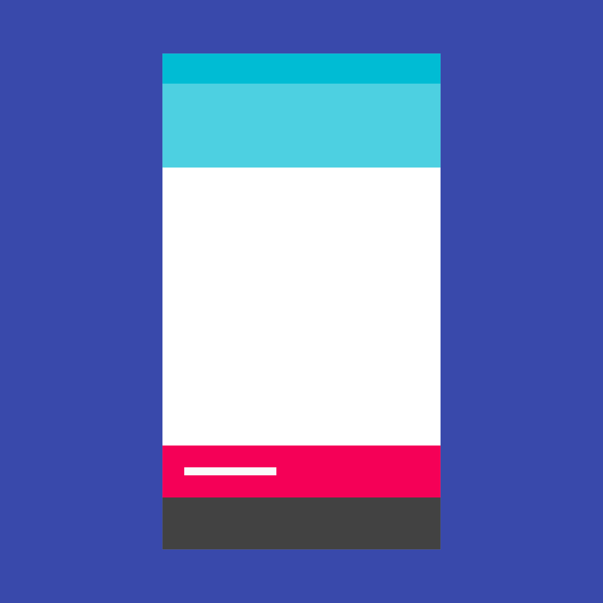

Snackbars 在屏幕的底部提供有关操作的反馈。
Snackbars包含一行文本，直接关系到用户刚刚操作的结果。并且可能会有一个文本按钮，但没有图标。
Toasts（仅限 Android）主要用于系统消息。它们也显示在屏幕底部，但不能通过滑动关闭。
用法
同时只能展示一个 Snackbar。每个 Snackbar 都可能有一个操作，但这个操作不能是「忽略」或「取消」。
行为
Snackbars 从屏幕底部向上滑出。
Snackbar 规格
- 操作按钮：14sp Roboto Medium，全大写
- 手机端高度：48dp（单行），80dp（多行）
- 桌面端高度：48dp
